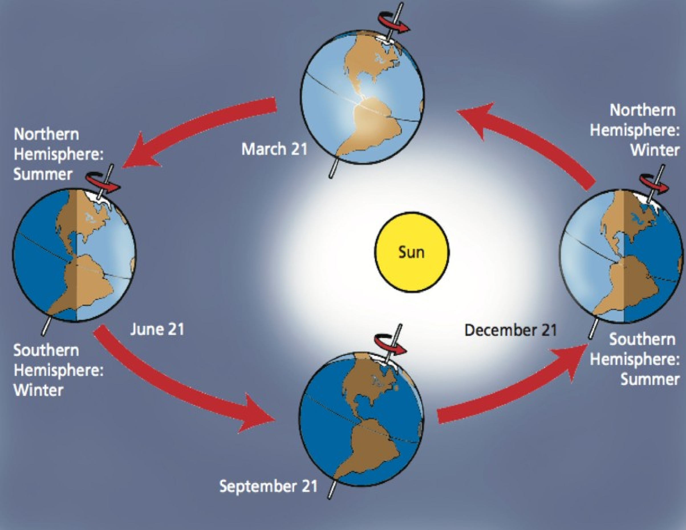
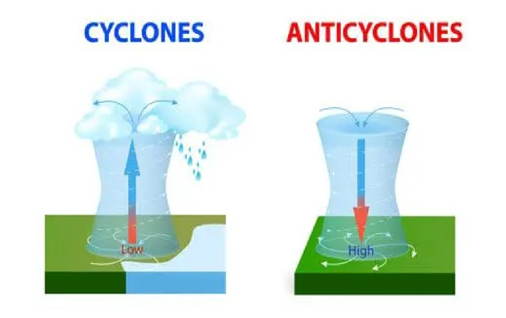
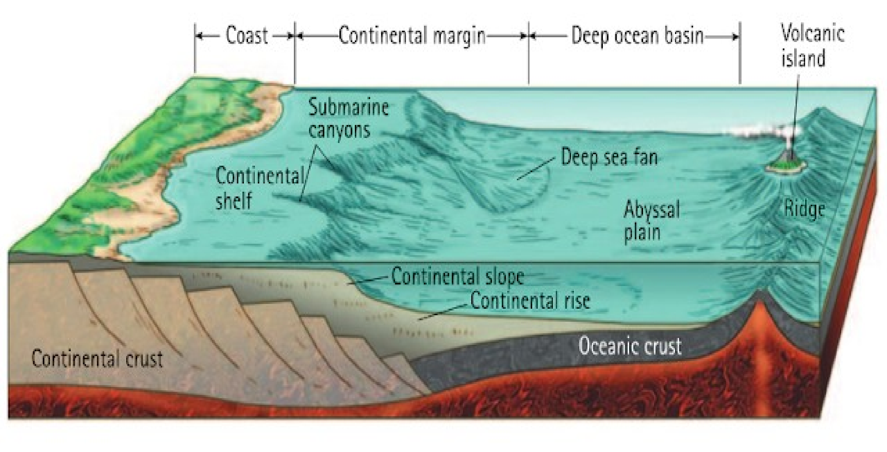

Section 10.2 The Seasons

Earth's axis is tilted at an angle of about 23.5 degrees relative to its orbit around the Sun. As Earth orbits the Sun, different parts of the planet receive varying amounts of sunlight depending on the angle of the Sun's rays Figure 10.2.1. During the summer months in the Northern Hemisphere, the North Pole is tilted toward the Sun, and the Sun's rays hit the Northern Hemisphere at a more direct angle, providing more heat and longer daylight hours. At the same time, the South Pole is tilted away from the Sun, resulting in shorter days and cooler temperatures in the Southern Hemisphere. During the winter months in the Northern Hemisphere, the North Pole is tilted away from the Sun, and the Sun's rays hit the Northern Hemisphere at a more indirect angle, providing less heat and shorter daylight hours. At the same time, the South Pole is tilted toward the Sun, resulting in longer days and warmer temperatures in the Southern Hemisphere. These changes in the angle of the Sun's rays as Earth orbits around the Sun cause the seasons to occur season animation 2 . The distance between the Earth and the Sun does have an effect on the amount of solar radiation that the Earth receives, but it is not the main factor that determines the seasons. The primary factor that determines the seasons on Earth is the tilt of its axis.
Solstices and equinoxes are important astronomical events that mark the changing seasons on Earth. Solstices occur twice a year, around June 20-22 and December 21-23, and mark the points in the Earth's orbit around the Sun when one of the Earth's poles is tilted most directly towards or away from the Sun. During the June solstice, which marks the beginning of summer in the Northern Hemisphere and winter in the Southern Hemisphere, the North Pole is tilted towards the Sun, resulting in the longest day of the year in the Northern Hemisphere and the shortest day in the Southern Hemisphere. During the December solstice, which marks the beginning of winter in the Northern Hemisphere and summer in the Southern Hemisphere, the South Pole is tilted towards the Sun, resulting in the longest day of the year in the Southern Hemisphere and the shortest day in the Northern Hemisphere.
Equinoxes occur twice a year, around March 20-21 and September 22-23, and mark the points in the Earth's orbit around the Sun when the tilt of the Earth's axis is not inclined towards or away from the Sun. During the March equinox, which marks the beginning of spring in the Northern Hemisphere and autumn in the Southern Hemisphere, the plane of the Earth's equator passes through the center of the Sun, resulting in equal amounts of daylight and darkness all over the world. During the September equinox, which marks the beginning of autumn in the Northern Hemisphere and spring in the Southern Hemisphere, the plane of the Earth's equator passes through the center of the Sun again, resulting in another day of equal daylight and darkness all over the world.
Subsection 10.2.1 Winds
Winds are primarily caused by differences in temperature and pressure between different parts of Earth's atmosphere. When air is heated, it becomes less dense and rises, creating an area of low pressure. Conversely, when air cools, it becomes more dense and sinks, creating an area of high pressure. This movement of air from high pressure to low pressure creates winds, which can be influenced by the rotation of the Earth and other factors such as the presence of mountains and oceans.
Temperature differences play a key role in creating these pressure systems and driving the movement of air. For example, the equator receives more direct sunlight and is therefore warmer than the poles, creating a temperature gradient that drives the movement of air from the equator towards the poles. This creates the global circulation patterns of the atmosphere, such as the trade winds and the westerlies. Local temperature differences can also create wind patterns, such as sea breezes and land breezes. During the day, land heats up more quickly than water, creating an area of low pressure over the land. The cooler, higher-pressure air over the ocean moves towards the land, creating a sea breeze. At night, the situation is reversed, with the land cooling down more quickly than the ocean and creating a high-pressure area. This causes the air to move from the land towards the ocean, creating a land breeze. Overall, temperature differences play a crucial role in creating the pressure systems that drive wind patterns and influence weather patterns across the Earth's surface.
The Coriolis effect is a phenomenon that occurs due to the rotation of the Earth on its axis. It causes moving objects, including air and water, to appear to veer off course from their straight-line motion. The Coriolis effect is caused by the Earth's rotation, which causes points on the equator to move at a faster speed than points closer to the poles. As a result, when air or water moves from one latitude to another, it appears to be deflected to the right in the Northern Hemisphere and to the left in the Southern Hemisphere. This deflection is due to the conservation of angular momentum, which causes the moving air or water to maintain its original speed and direction of motion as it moves across different latitudes. The Coriolis effect has important implications for weather patterns and ocean currents. In the Northern Hemisphere, the Coriolis effect causes air to rotate clockwise around areas of high pressure and counterclockwise around areas of low pressure. In the Southern Hemisphere, the rotation is opposite. Similarly, ocean currents in the Northern Hemisphere tend to flow to the right of their intended path, while those in the Southern Hemisphere tend to flow to the left. The Coriolis effect is also responsible for the formation of tropical cyclones, which are rotating storms that form over warm ocean waters. The rotation of the Earth causes these storms to spin counterclockwise in the Northern Hemisphere and clockwise in the Southern Hemisphere.

Cyclones and Anticyclones Cyclones and anticyclones are weather systems that are characterized by areas of low and high pressure, respectively. These systems are important for understanding and predicting weather patterns. Cyclones are areas of low pressure that are typically associated with clouds, precipitation, and stormy weather. In the Northern Hemisphere, cyclones rotate counterclockwise and move in a west to east direction, while in the Southern Hemisphere, they rotate clockwise and move in an east to west direction. Cyclones are commonly referred to as hurricanes, typhoons, or tropical storms when they occur over warm ocean waters. Figure 10.2.2.
Anticyclones, on the other hand, are areas of high pressure that are typically associated with clear skies, calm winds, and dry weather. In the Northern Hemisphere, anticyclones rotate clockwise and in the Southern Hemisphere, they rotate counterclockwise. Anticyclones are often referred to as high-pressure systems and are associated with stable weather conditions. Both cyclones and anticyclones are important for weather forecasting because they can influence the movement of other weather systems. Cyclones, for example, can cause strong winds, heavy rainfall, and storm surge, while anticyclones can cause calm winds, clear skies, and temperature inversions.
Tornado
Subsection 10.2.2 Hydrosphere
The hydrosphere is the part of Earth's surface where water exists, including oceans, rivers, lakes, groundwater, and other bodies of water. It plays a crucial role in
- Maintaining Earth's Climate: The oceans absorb, store, and release heat, which helps regulate the Earth's temperature and climate.
- Regulating Weather Patterns: The hydrosphere influences the movement and intensity of storms, hurricanes, and other weather patterns.
- Supporting Life: Water is essential for all forms of life, and the hydrosphere provides habitat for aquatic plants and animals, as well as drinking water for humans and other animals.
- Facilitating Transportation and Commerce: Oceans, rivers, and other bodies of water have been used for transportation and commerce for thousands of years, enabling the movement of people and goods around the world.
- Supporting Agriculture: Water from the hydrosphere is used for irrigation, which is essential for growing crops and supporting agriculture.
Overall, the hydrosphere plays a crucial role in the Earth's systems and is interconnected with the other spheres, including the atmosphere (air), geosphere (rock, soil, and land), and biosphere (living things).
A tsunami is a series of ocean waves with very long wavelengths (hundred of kilometers long) caused by large-scale disturbances of the ocean due to earthquakes, volcanic eruptions, or underwater landslides. Tsunamis can also be generated by large meteorite impacts or nuclear explosions in the ocean. When a large disturbance occurs, it can create a series of waves that radiate outwards from the source. These waves can travel across entire ocean basins and can cause significant damage when they reach shore. Tsunami waves can reach heights of tens of meters, and their high energy can devastate coastal communities, causing flooding, erosion, and destruction of buildings and infrastructure. Tsunamis travel at high speeds, with typical speeds of around 700 kilometers per hour in deep water. Because of their high speed and long wavelength, they can pass unnoticed in the open ocean, with wave heights typically only a few centimeters. However, as the waves approach shallow waters near the coast, they slow down and the wave height increases, creating a wall of water that can inundate coastal areas.
Subsection 10.2.3 Ocean Basins

www.visualcapitalist.com/cp/visualizing-earths-seasons/astro.unl.edu/classaction/animations/coordsmotion/eclipticsimulator.htmlownyourweather.com/cyclones-and-anticyclones/geologylearn.blogspot.com/2015/07/ocean-basins.html